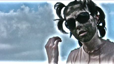

|
EVI EUROPA & ISI SPENGLER

Snail Cats | D 2008 | 6'24''
Format: HDV
Originalsprache: Englisch
Idee: Evelyn Rüsseler, Isi Spengler
Mit Evelyn Rüsseler, Isi Spengler
SnailCats is a conversation between a butchy cat and a ladylike „Better-Cat“, between a grimy beauty and a slimy would-be-beast, between two catlike real snaily creatures. The conversation is therapeutical, an inquiry about desires, like in a dream. It´s about transformation of bodies and sound (rec.) devices with fetish potential.
When your friend wants to be read as your cat – AND as your doctor ... What can you do?
Evelyn Rüsseler, geb. 1961 in Düsseldorf. Studium der Ethnologie und Philosophie, danach Film School in Albuquerque, USA. Spezialistin in Lochkameraphotographie. Seit 2003 Film- und Videoprojekte auf DV,Super 8 und 16mm, arbeitet zur Zt. an „Queer Miniatures“.
Ausstellungen: Künstliche Tiere - Natürliche Tiere, Ladengalerie Lothringer Strasse 13, München 2000 | Kühe, Balanstüberl, München 2003 | Stall, Installation, Augustenstr. 100, München 2004
Isabell Spengler, geb. 1972, lebt und arbeitet in Berlin. Sie ist
Experimentalfilmerin und Künstlerin.
Filme (Auswahl): Syncpoint 2007 | Lantouy 2006 | Mummy 2006 | Permanenet Residents 2005 | The Natural Life of Mermaids 2004 | Transformation in the Land of Enchantment 2003 | Pony, Tiger and the Ghost 2002 | Mirjam 2000
zurück
|